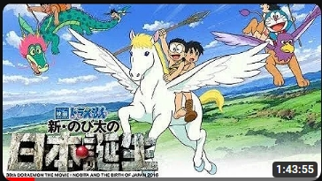

NỘI DUNG PHIM:
Trong thế kỷ 20, Nobita đã nảy ra ý tưởng sẽ rời khỏi nhà và tìm một nơi tốt đẹp hơn để tạm sống. Cùng lúc đó, những người bạn của Nobita là Shizuka, Gian, Suneo và Doraemon cũng muốn trốn chạy khỏi ngôi nhà của mình vì nhiều lý do khác nhau. Từ đó, Nobita đã đề xuất cả nhóm sẽ đi ngược thời gian, trở về quá khứ để đến sống một nơi ít người. Tất cả đều đồng ý và quyết định quay ngược thời gian trở về Nhật Bản thời nguyên thủy ở thời điểm 70.000 năm trước.
Khi đến đây, nhóm bạn đã cùng nhau xây dựng nên ngôi nhà của riêng mình và không ít lâu sau, cả nhóm lại quyết định trở về Nhật Bản thời hiện đại. Tuy nhiên, một cậu bé tên là Kukuru, ăn mặc như người nguyên thủy, đột nhiên xuất hiện trong nhà của Nobita. Kukuru đã mang Nobita trở về quá khứ và cho Nobita biết cậu thuộc bộ tộc ánh sáng. Bộ tộc nơi Kukuru đang ở đã bị tấn công bởi những kẻ xấu đến từ bộ tộc bóng đêm. Nobita và Doraemon quyết định tham gia chuyến hành trình giúp đỡ Kukuru bên cạnh các người bạn: Peganus, Dragon và Griffin. Nhưng Nobita đã không biết kẻ thù mà họ sắp đối đầu chính là tội phạm vượt thời gian đến từ thế kỉ 23….

